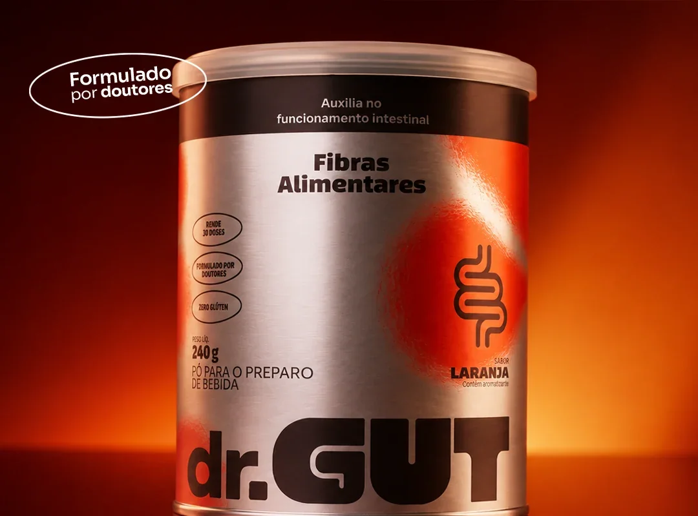

A fibra que seu intestino precisa no Mounjaro.
Nº 2 em dia. Barriga mais leve. Saciedade que apoia o processo. Tudo num copo de 14 kcal, sem complicar a rotina que você já tem.
- 7.500 clientes que cuidam do intestino com dr.GUT*
- 14 kcal por dose. Fácil de incluir sem comprometer o processo
- Nada de glúten, açúcar adicionado, cafeína ou laxante
Formulado por doutores · 5,8 g de fibra por dose · Garantia de 30 dias

A canetinha faz o que promete.
O problema é o que vem junto.
A medicação desacelera a digestão
É o mecanismo. O estômago esvazia mais devagar, e por isso a fome diminui.
O intestino fica mais lento junto
Constipação, inchaço e desconforto abdominal estão entre os efeitos descritos na bula dessas canetas.
Você come menos e as bactérias boas perdem alimento
Prato menor é menos fibra chegando ao intestino. Menos fibra, menos bactérias boas, mais desequilíbrio.
A canetinha reduz o ritmo do estômago e do intestino. É o mecanismo dela. Isso é esperado. O problema é quando esse trânsito lento vira intestino preso de vez, barriga estufada o dia inteiro e desconforto que não passa.
Ao mesmo tempo, quem está no processo come menos. E comer menos significa menos fibra chegando ao intestino, menos alimento para as bactérias que mantêm o trânsito funcionando.
Intestino mais lento não é detalhe pra ignorar.
É o seu sistema digestivo pedindo o suporte que a mudança na rotina alimentar tirou.
Intestino mais lento na canetinha não é impressão sua:
Está na bula, na Anvisa e na imprensa de saúde do Brasil.
Náusea, vômito, diarreia e constipação aparecem entre os efeitos mais frequentes, ligados à redução da motilidade do estômago e do intestino.
Ler matéria → Anvisa Mounjaro (tirzepatida): registro no BrasilA agência informa que as reações adversas mais comuns estão relacionadas à tolerabilidade gastrointestinal e à diminuição do apetite.
Ver na Anvisa → CNN Brasil Médica explica os riscos do uso de canetas sem acompanhamentoEntre os casos mais graves já registrados está a obstrução intestinal. Intestino lento não é pra deixar pra depois.
Ler matéria →Por que o dr.GUT faz sentido pra quem está nesse processo?
A medicação desacelera. O dr.GUT alimenta o que o intestino precisa pra se manter no ritmo.
A fibra que dá volume e maciez
Aumenta o volume do bolo fecal e deixa o trânsito mais suave. É a que faz o bolo andar sem esforço, sem forçar um intestino que já está mais lento.
Prebiótico que repõe o que o prato menor tirou
Quando você come menos, as bactérias boas perdem alimento. A inulina é a comida preferida delas, e mantém a fermentação equilibrada pra barriga não crescer ao longo do dia.
A fibra suave que não vira gel
Dissolve sem empelotar e é bem tolerada. É a razão de você conseguir tomar todo dia, sem gosma e sem desistir na segunda semana.
"Laxante força e o problema volta. A gente dá comida pras bactérias boas, e elas fazem o intestino funcionar sozinho. A gente alimenta. Não empurra."
GUT, o guia do seu intestino · dr.GUT
Dose cheia.
Cada ingrediente com uma função.
Sem estimulante. Sem laxante. Sem cafeína. O que você vê na tabela é o que age no seu corpo.
- PolidextroseVolume e maciez
- Inulina de chicóriaPrebiótico
- Goma guar (PHGG)Suave, sem gel
- Vitamina C100% VD · imunidade
- Zinco100% VD · imunidade
- Biotina100% VD · pele e cabelo
- Selênio50% VD · proteção celular
- EstéviaAdoçante natural
da fibra que seu corpo pede por dia, num copo de 14 kcal
5,8 g de fibras por dose de 8 g, conforme a tabela nutricional do produto. VD de 25 g.Quem está no processo,
cuida do intestino.
Relatos de quem incluiu o dr.GUT na rotina.
Fórmula feita por doutores
Cada ingrediente escolhido com critério: dose certa, sem exagero, sem promessa mágica.
- Fibras alimentares5,8 g por dose · 23% do VD
As fibras alimentares auxiliam no funcionamento do intestino. Alegação autorizada pela Anvisa para suplementos que atingem o mínimo de fibra por porção; o dr.GUT entrega mais que o dobro do piso.
- Vitamina C, zinco e selênioImunidade
Vitamina C e zinco auxiliam no funcionamento do sistema imune. Selênio auxilia na proteção das células contra danos. Três deles em 100% do valor diário.
- Zinco e biotinaPele e cabelo
Contribuem para a manutenção da pele e do cabelo. Útil quando o prato menor começa a aparecer no espelho.
Intestino mais lento pede ajuda de verdade, não de qualquer fibra.
Veja a diferença na prática.
| Critério | dr.GUT | Sem suporte | Laxante |
|---|---|---|---|
| Alimenta as bactérias boas | ✓ | ✗ | ✗ |
| Volume e maciez sem forçar | ✓ | ✗ | Força |
| Caloria que não atrapalha o processo | 14 kcal | — | — |
| Fácil de manter na nova rotina | 30 segundos | — | Tem dia certo |
| Vitaminas e minerais em dose cheia | 4 | ✗ | ✗ |
| Dá pra usar todo dia | ✓ | — | Não é o indicado |
| Sabor | Laranja de verdade | — | Remédio |
| Garantia | 30 dias | — | ✗ |
Quem já usa, conta
4,99 de 5 na loja oficial da dr.GUT · mais de 7.500 clientes*
★★★★★
"Já é o terceiro que faço o uso. Estou mais desinchada e meu intestino está funcionando como um relógio. Todos os dias consigo ir ao banheiro de forma espontânea, coisa que não acontecia há anos."
★★★★★
"Ótimo, regula bem certinho e não dá dor de barriga tipo laxante. Só regula mesmo."
★★★★★
"Intestino andava travado há muito tempo e depois dessa fibra voltou a funcionar normalmente. Não fico mais sem ela, é excelente."
★★★★★
"Mistura facilmente na água, até com garfo. Ajuda o intestino a trabalhar quase que instantaneamente, ajuda no controle de peso e na saciedade principalmente."
★★★★★
"Já tomei fibra de algumas marcas e essa é uma das que mais gostei. Não tem gosto ruim, dá pra misturar com os alimentos e o preço é bom. Recomprarei."
★★★★★
"Tenho o intestino preso, e depois que passei a utilizar esse produto meu intestino está funcionando diariamente. Recomendo!"
Sua rotina leve
começa aqui
Não sentiu diferença no intestino em 30 dias? Devolvemos seu dinheiro.
1 lata · 240 g
Experimente
De R$ 160,00
3x de R$ 49,00
sem juros · ou R$ 147,00 à vista
- 30 doses · 1 mês
- Frete grátis na 1ª compra com o cupom DRGUT
- Garantia 30 dias
- R$ 4,90 a dose
No Pix: R$ 139,65 (5% OFF)
3 latas · 720 g
Transformação
De R$ 480,00
3x de R$ 112,33
sem juros · ou R$ 336,99 à vista
- 90 doses · 3 meses
- Frete grátis
- Garantia 30 dias
- Economia de R$ 143,01
- R$ 3,74 a dose
No Pix: R$ 320,14 (5% OFF)
2 latas · 480 g
Comprometimento
De R$ 320,00
3x de R$ 82,33
sem juros · ou R$ 247,00 à vista
- 60 doses · 2 meses
- Frete grátis
- Garantia 30 dias
- Economia de R$ 73,00
- R$ 4,12 a dose
No Pix: R$ 234,65 (5% OFF)
🎁 Primeira compra? Use o cupom DRGUT no checkout e ganhe frete grátis.
30 dias de garantia incondicional.
Se você não sentiu diferença no seu trânsito intestinal em 30 dias de uso contínuo, devolvemos 100% do seu dinheiro. Sem burocracia, sem questionamento.
Perguntas frequentes
O dr.GUT interfere na canetinha?
O dr.GUT é um suplemento alimentar de fibras, vitaminas e minerais. Não é medicamento, não substitui nem altera o seu tratamento. Como em qualquer suplemento, converse com seu médico ou nutricionista sobre o seu protocolo antes de incluir.
Quando tomar em relação à aplicação?
Pode ser em qualquer momento do dia. A maioria toma de manhã, ou 20 a 30 minutos antes do almoço quando o foco é saciedade. Não há horário ligado à aplicação da caneta; siga a orientação do seu médico.
Tem calorias? Vai atrapalhar o processo?
Cada dose tem 14 kcal, zero açúcar adicionado, sem glúten e adoçada com estévia. Foi pensado pra quem está comendo menos e precisa de fibra, vitaminas e minerais sem peso na conta do dia.
Por que o intestino fica preso com a canetinha?
A medicação desacelera o esvaziamento do estômago, e é parte do mecanismo que reduz a fome. O intestino fica mais lento junto. Ao mesmo tempo, quem come menos ingere menos fibra, o que agrava o quadro. O dr.GUT atua nesse ponto: 5,8 g de 3 fibras que dão volume, maciez e alimento para as bactérias boas. Fibras alimentares auxiliam no funcionamento do intestino.
Em quanto tempo começo a sentir diferença?
A gente não promete prazo, porque corpo não é planilha. O que sabemos é que intestino responde a constância: por isso o pote tem 30 doses e a garantia tem 30 dias. Nos primeiros dias, algumas pessoas sentem um pouco mais de gases. É a fibra começando a agir. Comece com meia dose e aumente aos poucos.
Posso usar se estou só pensando em começar a canetinha?
Sim. O dr.GUT é um produto de saúde intestinal para qualquer pessoa, em tratamento ou não. Se você está considerando iniciar, vale conversar com seu médico sobre cuidar do intestino desde o começo.
Como tomar?
1 dose (8 g, 1 scoop e meio) em 200 ml de água bem gelada. Mexe e pronto, dissolve em 30 segundos, sem gosma. Com uso diário os resultados são mais consistentes.
Frete grátis acima de R$ 247 · Garantia 30 dias · Pagamento seguro